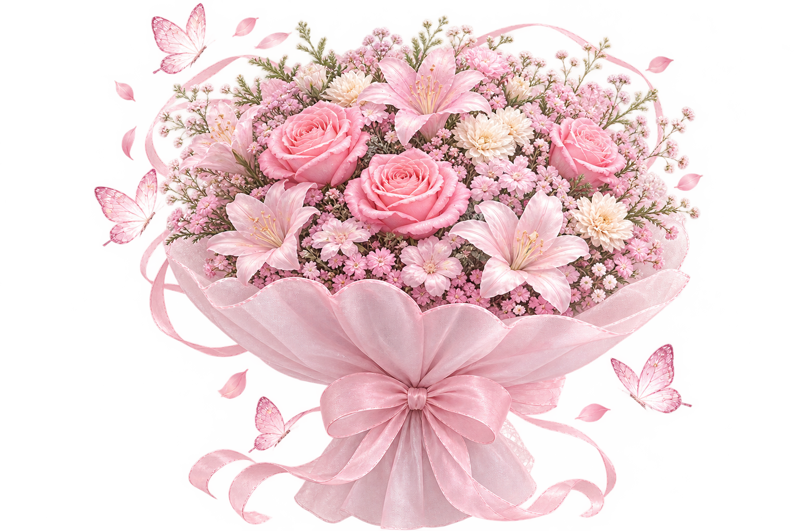
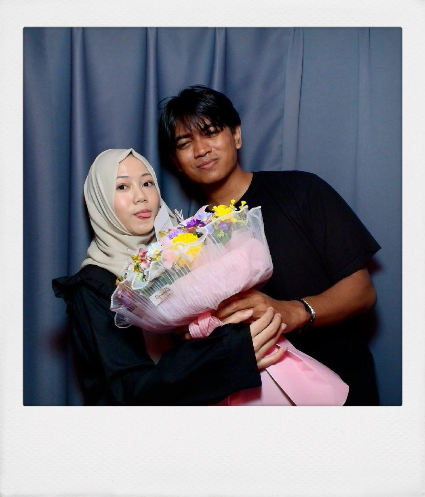

01 — awal
Waktu kita mulai
Dari dua orang yang awalnya bertemu tanpa sengaja kemudian berpisah dan dipertemukan kembali di tempat yang sampai akhirnya kita punya banyak cerita yang cuma kita berdua yang mengerti.
our little milestone · 02 → 11
Sebelas bulan bukan sekadar angka. Ini sebelas bulan dari banyak cerita yang kari syukuri banget 😣.
Hal-hal kecil yang membuat sebelas bulan ini terasa sangat berarti.
Dari dua orang yang awalnya bertemu tanpa sengaja kemudian berpisah dan dipertemukan kembali di tempat yang sampai akhirnya kita punya banyak cerita yang cuma kita berdua yang mengerti.
Masih eepy. Masih kari. Masih ada cerita random, ketawa, manja, dan hari-hari yang ingin kari ulang lagi.
Bukan cuma momen besar. Cara eepy cerita, cara eepy ketawa, cara eepy ngomong, sikap dewasanya eepy, manjanya eepy bahkan hal random yang eepy lakukan juga ikut jadi favorit kari.
11 bulan sudah lewat. Kari cuma berharap halaman berikutnya masih kita isi berdua, pelan-pelan, sampai akhir hayat memisahkan kita 🥰.

Dearest Istriku eepy,
Di hari yang spesial ini, Kari cuma ingin bilang satu hal sederhana: Kari bersyukur banget eepy ada di hidup kari. Tawa eepy, cerita-cerita random yang eepy bagi, dan hal-hal kecil yang kita lewati bareng, semuanya selalu jadi bagian favorit kari dalam hidup ini.
Makasih yaa sayangg, sudah selalu ada, sudah sabar menghadapi kari, dan sudah jadi salah satu alasan kari semangat menjalani hari-hari. Semoga kita terus tumbuh bareng, ketawa bareng, dan saling jaga sampai akhir.
Kari tau kalau hubungan kita ga berjalan dengan baik sampai sekarang, walaupun begitu kari pastinya berusaha keras banget untuk berubah ya sayangku, dan suatu saat nanti hubungan kita bisa menjadi sehat terus eepy juga bisa menemukan sparks hidup eepy kembali
Kari pastinya akan selalu hati hati dalam bertinda, kari pasti selalu memikirkan tentang eepy, dimanapun kapanpun.
Happy Monthsary yang ke 11 bulan sayangku. Kari sayang banget sama eepy, lebih dari yang bisa kari tulis di sini, i love you more than anyone in this universe, i love you in every single universe, i love you for infite times, i love you more and even more each day. i love you my sayang my pincess my kecik my miracle my keberuntungan my happiness my everything my only love my last love my wife ♡
— Kari

11 bulan selesai. Cerita kita belum.
Happy 11th Monthversary, eepy. ♡